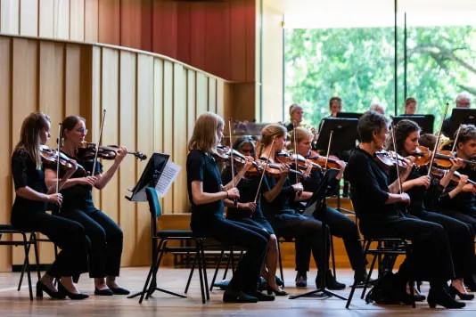

Nieuws ·
Amateurstrijkers gezocht voor Strijkersdag Arnhem

Op zondag 26 mei a.s. organiseert Phion, Orkest van Gelderland & Overijssel samen met De Muziekmakerij en ArtEZ Conservatorium Arnhem een Strijkersdag in Musis, Arnhem. Dé dag waarop amateurstrijkers gecoacht worden door orkestleden van Phion en door docenten van De Muziekmakerij en ArtEZ Conservatorium. Aanmelden kan al vanaf 1 jaar les en beheersing van minimaal de eerste 2-vingerstanden.
Drie projectorkesten
Deze dag is speciaal bedoeld om amateurmusici te stimuleren en te inspireren. Door samen met professionals de prachtige klankwereld van de strijkmuziek te duiken.
Er worden deze dag drie orkesten gevormd, die allemaal een eigen programma instuderen:
Junior Orkest
Kinderen in de basisschoolleeftijd, vanaf 1 jaar les, die minimaal de eerste twee vingerstanden goed beheersen.
Muziek: Miniaturen – Anne-Maartje Lemereis
Deelname aan het Junior Orkest is gratis.
Jeugd Orkest
Jongeren van 12 t/m 21 jaar, vanaf 4 jaar les.
Muziek: Delen uit de Holbergsuite van Edvard Grieg.
Kosten: €10,- inclusief lunch
Het Groot Orkest
Voor enthousiaste, gevorderde strijkers.
Muziek: Fantasia van Ralph Vaughan Williams
Kosten: €20,- inclusief lunch
Lunch- en slotconcert
Lunchconcert
Na de lunch zullen de coaches om 13:00 uur een concert verzorgen. Ze vertellen over hun baan en er is ook de mogelijkheid om vragen te stellen. Overigens kan dat laatste natuurlijk de hele dag!
Slotconcert
Om 16:30 uur zal er een slotconcert worden gegeven in de Parkzaal. Alle orkesten zullen laten horen wat ze die dag hebben ingestudeerd.
Meer informatie en aanmelden
Meld je voor 26 april aan via phion.nl/strijkersdagarnhem